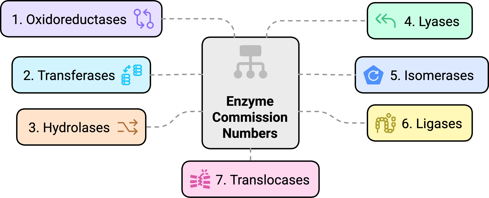
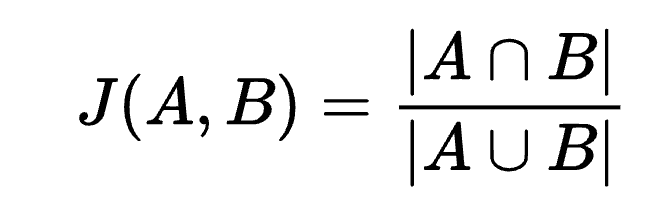

For more information
What are EC classifications?
The Enzyme Commission number (EC) is defined as a unique identifier assigned to enzymes based on the International Union of Biochemistry's classification rules helping to determine an enzyme's identity (Enzyme Commission Number - an Overview, n.d.). An EC number has four levels.

Source: LibreTexts-Biology , (n.d.)

Source: LibreTexts-Biology , (n.d.)
Information on the Investigated Pathways
The webpage compares 12 human pathways selected from WikiPathways. They cover three metabolic areas:
-
Carbohydrate and central energy metabolism
- WP534: Glycolysis and Gluconeogenesis
- WP134: Pentose Phosphate Metabolism
- WP500: Glycogen Synthesis and Degradation
- WP78: TCA Cycle (also known as the Krebs or Citric Acid Cycle)
-
Lipid metabolism
- WP357: Fatty Acid Biosynthesis
- WP143: Fatty Acid Beta-Oxidation
- WP311: Ketone Body Synthesis and Degradation
- WP197: Cholesterol Biosynthesis
-
Amino acid and redox metabolism
- WP1495: Glycine Metabolism
- WP465: Tryptophan Metabolism
- WP497: Urea Cycle and Metabolism of Amino Groups
- WP100: Glutathione Metabolism
Methodology
- Data collection. 12 human metabolic pathways are selected from WikiPathways. Using two SPARQL queries the genes recorded as pathway members in Wikidata and the EC numbers are retrieved.
-
Gene overlap.
For each unique pair of pathways, the Jaccard similarity
is calculated using all distinct genes retrieved for
each pathway.

Figure 3. Jaccard Similarity Index, A = Pathway 1, B = Pathway 2.
Source: OmicsForum , (2026) -
EC-based functional similarity.
The shared genes are removed before comparing their EC
annotations. Using the same complete EC numbers at every
level, four sets of distinct EC entries for each pathway
is built.
For example,
3.5.4.6contributes3,3.5,3.5.4, and3.5.4.6at levels 1 through 4, respectively. At each level, Jaccard similarity is calculated by dividing the number of shared EC entries by the total number of distinct EC entries across both sets. - Annotation coverage and missing data. For each side of a pair, EC coverage is the number of non-shared genes with at least one complete EC number out of all retrieved non-shared genes. If either pathway had no retrieved genes, neither score was assessable. If both gene lists were available but either side lacked EC annotations for its non-shared genes, only the EC similarity was marked as not assessable. A score of 0% means both sets were available but had no entries in common.
- Visualisation. We plotted gene overlap on the x-axis and EC similarity on the y-axis in four scatterplots, one for each EC level. The plots use the same assessable pairs and axis scales so the levels can be compared directly. The results table includes all pairs. The relationship between gene overlap and EC-based functional similarity was assessed using Pearson's correlation coefficient (r) at each of the four EC classification levels. Linear regression lines were fitted to visualise the relationships, and coefficients of determination (R²) were calculated to quantify the proportion of variation explained by each linear model.